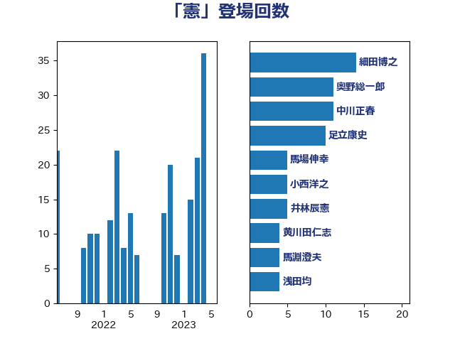

単語「憲」

| 細田博之 | 自由民主党 | 14 回 |
| 奥野総一郎 | 立憲民主党 | 11 回 |
| 中川正春 | 立憲民主党 | 11 回 |
| 足立康史 | 日本維新の会 | 10 回 |
| 馬場伸幸 | 日本維新の会 | 5 回 |
| 小西洋之 | 立憲民主党 | 5 回 |
| 井林辰憲 | 自由民主党 | 5 回 |
| 黄川田仁志 | 自由民主党 | 4 回 |
| 馬淵澄夫 | 立憲民主党 | 4 回 |
| 浅田均 | 日本維新の会 | 4 回 |
| 山口俊一 | 自由民主党 | 4 回 |
| 宮内秀樹 | 自由民主党 | 4 回 |
| 塩川鉄也 | 日本共産党 | 4 回 |
| 吉田宣弘 | 公明党 | 4 回 |
| 阿部知子 | 立憲民主党 | 3 回 |
| 赤嶺政賢 | 日本共産党 | 3 回 |
| 藤井比早之 | 自由民主党 | 3 回 |
| 橋本岳 | 自由民主党 | 3 回 |
| 新垣邦男 | 立憲民主党 | 3 回 |
| 山添拓 | 日本共産党 | 3 回 |
| 北側一雄 | 公明党 | 3 回 |
| 高木毅 | 自由民主党 | 2 回 |
| 進藤金日子 | 自由民主党 | 2 回 |
| 義家弘介 | 自由民主党 | 2 回 |
| 稲田朋美 | 自由民主党 | 2 回 |
| 福島みずほ | 社会民主党 | 2 回 |
| 玉木雄一郎 | 国民民主党 | 2 回 |
| 海江田万里 | 立憲民主党 | 2 回 |
| 木原稔 | 自由民主党 | 2 回 |
| 岩谷良平 | 日本維新の会 | 2 回 |
| 小寺裕雄 | 自由民主党 | 2 回 |
| 小倉將信 | 自由民主党 | 2 回 |
| 宮本岳志 | 日本共産党 | 2 回 |
| 大塚耕平 | 国民民主党 | 2 回 |
| 務台俊介 | 自由民主党 | 2 回 |
| 前川清成 | 日本維新の会 | 2 回 |
| 三木圭恵 | 日本維新の会 | 2 回 |
| 高良鉄美 | 無所属 | 1 回 |
| 音喜多駿 | 日本維新の会 | 1 回 |
| 鈴木俊一 | 自由民主党 | 1 回 |
| 道下大樹 | 立憲民主党 | 1 回 |
| 辻清人 | 自由民主党 | 1 回 |
| 赤羽一嘉 | 公明党 | 1 回 |
| 赤澤亮正 | 自由民主党 | 1 回 |
| 舟山康江 | 国民民主党 | 1 回 |
| 舞立昇治 | 自由民主党 | 1 回 |
| 自見はなこ | 自由民主党 | 1 回 |
| 緒方林太郎 | 無所属 | 1 回 |
| 篠原孝 | 立憲民主党 | 1 回 |
| 竹内譲 | 公明党 | 1 回 |
| 福重隆浩 | 公明党 | 1 回 |
| 浮島智子 | 公明党 | 1 回 |
| 浅野哲 | 国民民主党 | 1 回 |
| 枝野幸男 | 立憲民主党 | 1 回 |
| 松川るい | 自由民主党 | 1 回 |
| 杉尾秀哉 | 立憲民主党 | 1 回 |
| 後藤茂之 | 自由民主党 | 1 回 |
| 山田賢司 | 自由民主党 | 1 回 |
| 小野泰輔 | 日本維新の会 | 1 回 |
| 小泉進次郎 | 自由民主党 | 1 回 |
| 小沢雅仁 | 立憲民主党 | 1 回 |
| 小林一大 | 自由民主党 | 1 回 |
| 宮路拓馬 | 自由民主党 | 1 回 |
| 宮本徹 | 日本共産党 | 1 回 |
| 大野敬太郎 | 自由民主党 | 1 回 |
| 大西健介 | 立憲民主党 | 1 回 |
| 堀井巌 | 自由民主党 | 1 回 |
| 城井崇 | 立憲民主党 | 1 回 |
| 吉田久美子 | 公明党 | 1 回 |
| 古川元久 | 国民民主党 | 1 回 |
| 加藤明良 | 自由民主党 | 1 回 |
| 伊藤孝江 | 公明党 | 1 回 |
| 伊藤孝恵 | 国民民主党 | 1 回 |
| 仁比聡平 | 日本共産党 | 1 回 |
| 井坂信彦 | 立憲民主党 | 1 回 |
| 丸川珠代 | 自由民主党 | 1 回 |
| 中谷一馬 | 立憲民主党 | 1 回 |
| 中西祐介 | 自由民主党 | 1 回 |
| 下村博文 | 自由民主党 | 1 回 |
| 三ッ林裕巳 | 自由民主党 | 1 回 |